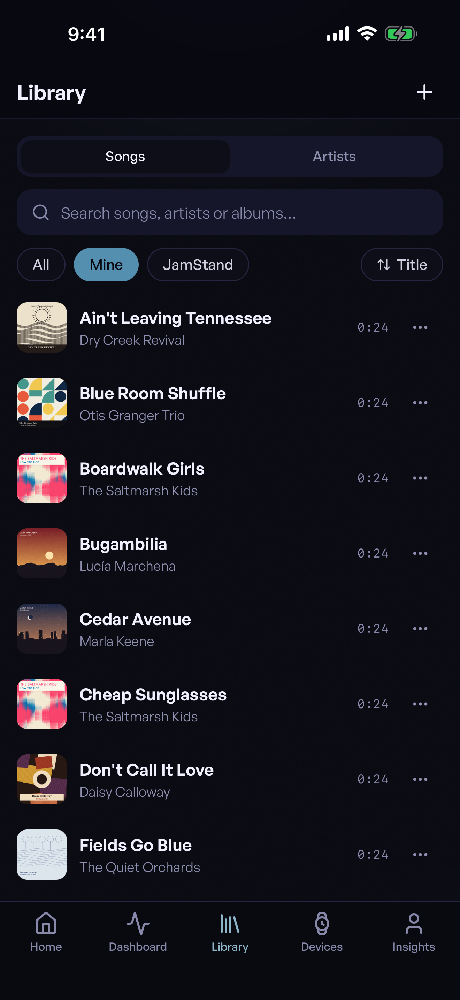
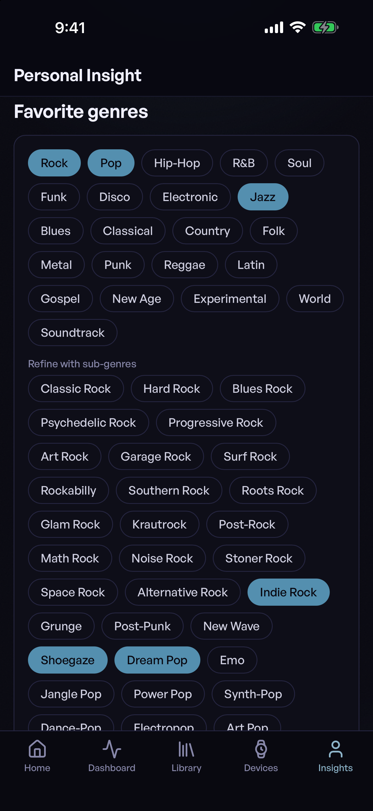

Music that fits your moment.
Your body and your day drive the picks: heart rate, sleep, the workout you just finished, the weather, the hour, the place. It is read on your phone. Your listening history, moods and wearable data stay on your device, and we run no servers that hold your data.
After the workout
Just finished a run? The picks come in brighter. Recovery day? Gentler.

Open it and it plays
Open the app and your soundtrack is right there. Add your library and a wearable whenever you like.
Your library, on your phone
Bring your own music. Songs, artists and albums, searchable and sorted your way.


Tap and play
Tap any song and it plays right away.
Set the scene
Choose a moment and watch what the phone reads change, and the pick with it. Read on the phone.
Fixed, hand-picked example songs on this page. In the app, the readings are taken on your phone.
Now the pick is Sunburnt — The Saltmarsh Kids
What was read: a run just finished, heart rate coming down, a clear evening outside.
Read on the phone
Join the private beta
Email us to join the private beta. Tell us whether you listen, make music, or both. One reply, no list.
contact@jams.community